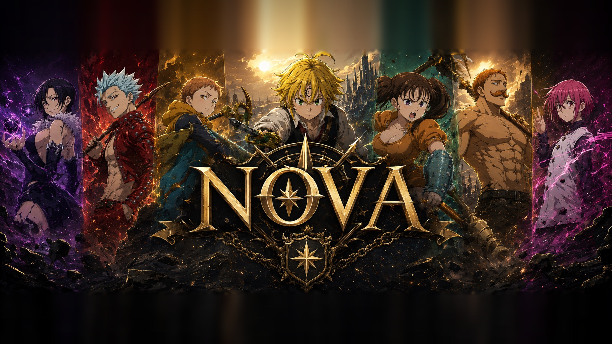

Boss de guilde
Prépare une équipe avec les membres.
L'espace de notre guilde
Retrouve les équipes du Boss de Guilde, partage ton roster et organise les prochaines sessions.

Prépare une équipe avec les membres.
Partage tes personnages pour composer les équipes.
Trouvons un créneau pour jouer ensemble.
Connecte-toi pour partager tes équipes et ton roster.
Renseigne tes personnages : les membres composeront avec.
Runs engagées, rapports à corriger et créneaux de la confrérie.
Cette semaine
Ce qu'il te reste à faire cette semaine.
Forge des équipes
Assigne 4 héros, leur arme et leurs armures, puis enregistre l'équipe pour la rendre disponible face au Boss de Guilde.
Registre de la confrérie
Toutes les équipes proposées par les membres. Modifie ou retire les tiennes à tout moment.
Collection de la confrérie
Enregistre tes personnages une fois, puis réutilise leurs équipements dans tes équipes.
Confrérie
Vue d'ensemble, DPS par élément et soutiens de tous les éléments, calculés directement depuis les rosters.
Boss de Guilde
Équipes, créneaux et résultats de la semaine. Six groupes sont créés automatiquement chaque semaine, et le reset tombe le lundi à 9 h.
Référence
Les compétences, les passifs et les statistiques du jeu, en français.
Aucun héros ne correspond à cette recherche.
Chasse
Ce qu'il te reste à trouver, arme par arme et gravure par gravure.
Ma collection
Boss de confrérie
Les dégâts de chaque compétence de tes builds contre Akumu. Un chiffre par compétence, jamais un dégât par seconde : les temps d'animation ne sont mesurés nulle part.
Confrérie
Qui a accès aux données de la confrérie. Un compte fraîchement créé est invité : il ne voit que son propre roster tant qu'il n'est pas accueilli ici.
Centre de commandement
Indique les heures où tu peux jouer. La vue « La confrérie » montre les créneaux où le plus de monde est disponible pour lancer une run.